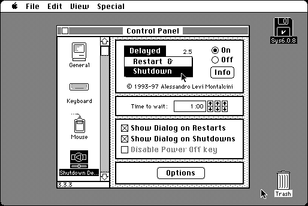

Download
shutdown-delay-25.zip (78K) Shutdown Delay 2.5 repackaged into a zipped hfs disk image and checksum file. The disk image can be mounted with Mini vMac.
shutdown-delay-25.hqx (98K) Shutdown Delay 2.5 in the original format.
copyright: Alessandro Levi Montalcini
mod date: Apr 30, 1997
license: Freeware
last known url
(gone)
Displays “a dialog at Restart and Shutdown time”, to confirm or cancel. Would seem to be mostly superseded by “NoDesktopCleanup”.

If you find these downloads useful, please consider helping the Gryphel Project, which hosts them.
Here are the md5 checksums for the downloads, signed with Gryphel Key 5:
--------- GRY SIGNED TEXT --------- fe58f45720f8db75110f8b26531aa0f3 shutdown-delay-25.zip c7cbb6fe739f6271488852547c1ff05d shutdown-delay-25.hqx ------- BEGIN GRY SIGNATURE ------- Gry/4Xa8CFcUzxdN/HiywgoN2z7IyyrTW+yicecYuvEnQRNNzshtY5ZmJkSig3g7 7pz4gxNhcIXlhANnKbJYn16wcdZt2yOFNYWEsPqgt1tQiY5RK1s9oxloxVm3ynud xxiRTn8vsU/Inew2+aOVdHN1K1s1318gA809jEY0O+umAzdnz961tqQl7O6FOPnO -------- END GRY SIGNATURE --------